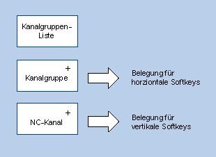

Für das Kanalmenü wird über die Gesamtheit der Kanäle aller involvierten NCU eine logische Sicht definiert, welche in Kanalgruppen und diese wiederum in konkrete NC-Kanäle strukturiert ist.
Zum Zweck der Umschaltung der Bedienung wird für das Kanalmenü eine Kanalgruppenliste definiert. Eine Kanalgruppenliste besteht aus einer oder mehreren Kanalgruppen. Eine Kanalgruppe wiederum besteht aus einer oder mehreren NC-Kanälen.
Im Kanalmenü sind die Kanalgruppen über die horizontalen Softkeys anwählbar.
Die Kanäle einer angewählten Kanalgruppe sind mit den vertikalen Softkeys anwählbar.
Als auswählbares Umschaltziel ist immer ein bestimmter NC-Kanal einer konkreten NCU. Bei einer über das Kanalmenü ausgelösten Umschaltung auf einen anderen Kanal kann dabei ein Umschalten auf eine andere NCU impliziert sein.
| Hinweis |
Einer Kanalgruppe kann in einer Anlage z. B. eine Bearbeitungsstation entsprechen, die darin zusammengefassten Kanäle Bearbeitungseinheiten. In einem Kanalmenü können maximal 32 Kanalgruppen mit jeweils maximal 8 Kanälen projektiert werden. |
Für eine Anlage wird die Gesamtstruktur des Kanalmenüs in der Datei "netnames.ini" projektiert. Die Projektierung in der Datei "netnames.ini" beinhaltet alle Umschaltziele, die an der Anlage verwendet werden. Diese Projektierung muss einheitlich auf allen SINUMERIK ONE-Systemen abgelegt bzw. verteilt werden, die das Kanalmenü zur Verfügung stellen.
Pro Bedienstation wird in der jeweiligen Datei "config.ini" ein für die Bedienstation individuelles Kanalmenü konfiguriert.
Im ersten Schritt werden in der Datei "netnames.ini" alle Kanalgruppen definiert, die an der Anlage verwendet werden, unabhängig von den konkreten Bedienstationen.
Im zweiten Schritt werden in den stationseigenen Dateien "config.ini" die Ausprägung des Kanalmenüs für die konkrete Bedienstation definiert.